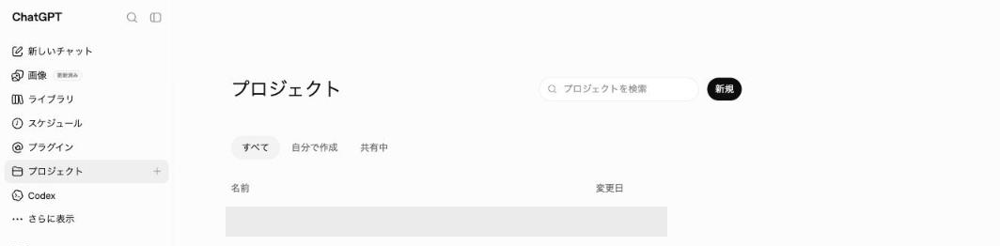
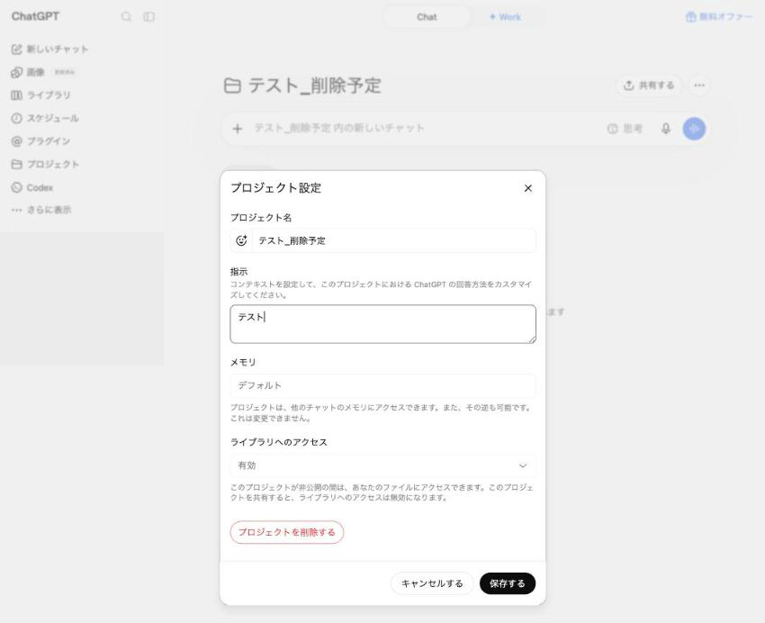
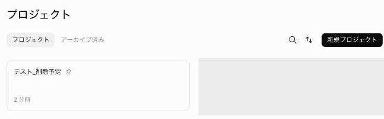
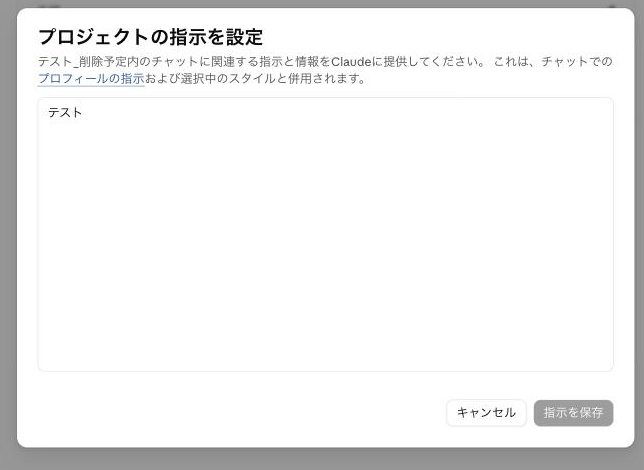
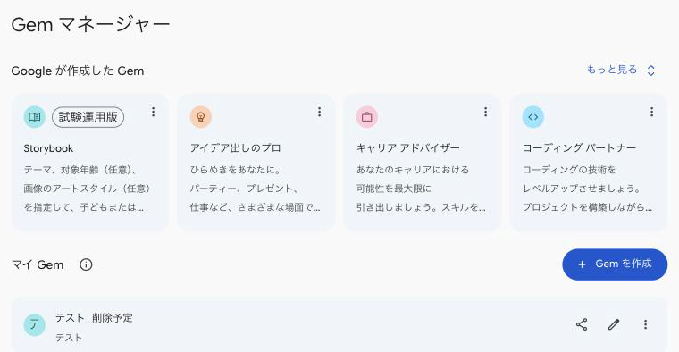
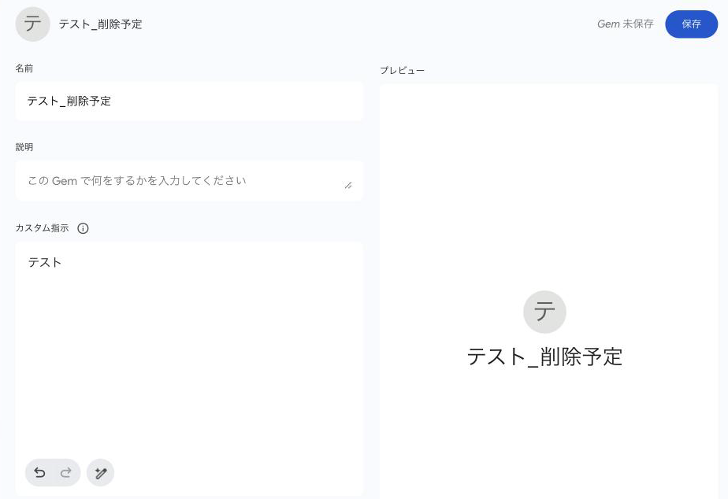

1今日の流れ
| 時間 | やること | この資料のどこを使うか |
|---|---|---|
| 17:00〜17:25（25分） | 最初の回答を残す情報の伝え方による違いを知ります | 2・3 |
| 17:25〜18:00（35分） | 情報を整理するAIと相談しながら、文章直しに使う情報を3つに整理します | 4（記入例・二通りの進め方・空欄テンプレ） |
| 18:00〜18:10（10分） | 休憩する書き途中の方は、そのまま続けても大丈夫です | 4 |
| 18:10〜18:25（15分） | 保存する情報を選ぶ何を保存し、何を毎回伝え、何を入れないかを選びます | 5 |
| 18:25〜18:40（15分） | AIに情報を保存する文章直し用の場所を作り、整理した情報を保存します | 6 |
| 18:40〜18:50（10分） | 回答を比べる最初の回答と、保存後の回答を同じ条件で比べます | 7 |
| 18:50〜19:00（10分） | 見直し方を知る・質問する保存した情報を見直す時期を決め、残りの時間で質問します | 8・9 |
ノートPCがあると進めやすい内容です。スマートフォンではブラウザから使うAIを開いて進めます。画面の並びが異なる場合は、講師と一緒に確認してください。
2最初の回答を残す
AIへ送る文章には、すでに公開した文章か、このページの架空のサンプルを使ってください。実名・連絡先・未公開の契約や数字は取り除きます。送ってよいか迷う場合はサンプルを使ってください。この注意は、会話に送る内容にも、あとでプロジェクトやGemへ保存する内容にも当てはまります。
いちばん最初に、普段の使い方で答えを1つ残しておきます。あとで、情報を整理して保存したあとの答えと見比べます。ここでいう基本情報は、事業や活動、普段の読者、文体、避けたい表現など、依頼をまたいで使う情報です。普段、基本情報を毎回貼っている方は今回も貼ってください。設定やすでにある保存場所を使っている方は、そのまま使います。基本情報を貼っていない方は、今回も貼りません。
AIに送る前に、よい回答かどうかを判断する条件を3つ、手元に書いてください。比較を終えるまで条件は変えません。
| 合格条件 | 記入例 |
|---|---|
| 読者に合う | AIに慣れていない方にも内容が伝わる |
| 文体が合う | やわらかい敬体になっている |
| 避けたい表現や守る制約 | 「誰でも簡単」と言い切っていない |
普段使う場所で新しい会話を開き、ご自分が最近書いた文章を使います。仕事のメール、お知らせ、案内文、どれでも大丈夫です。今回の目的・読者・期限など、その都度伝える情報を決めて、次の形で投げてください。この依頼文は最後まで残します。
目的: [読んだ方にどう動いてほしいか]
読者: [誰に向けた文章か]
期限など今回だけの条件: [なければ「なし」]
この文章を直してください。
[直したい文章]普段から使う文体や制約は、このあとのインタビューで【変わらない情報】に入れます。今回の文章・目的・読者・期限は、BeforeとAfterの両方で同じものを使います。
今回の方法にも印をつけてください。
この回答は閉じずに残しておいてください。
手元に文章がない方は、下のサンプルを使ってください。
目的は「イベントの内容を知り、詳細を確認してもらう」、読者は「AIに慣れていない参加候補者」、文体は「やわらかい敬体」として試せます。
こんにちは！以前ご案内したイベントですが、いよいよ来週の開催になりました。まだお席あります。難しそうと思われる方も多いと思うんですが、はじめての方向けの回もあるので、普段あまり触っていない方でも大丈夫です。あと、もう一歩進んだ内容の回も同じ日にやります。こちらはPCがあった方がいいです。詳細は前の投稿を見てもらえたらと思います。当日お会いできるのを楽しみにしています！3情報を渡す4つの方法
必要な情報が足りないと、答えが自分の条件から外れることがあります。文章直しに使う情報を専用の場所へ保存すると、毎回貼る手間を減らせます。まず、今どの方法を使っているかを確認します。
| 14時の回 | 17時の回今回 | その先の回 | |
|---|---|---|---|
| カルテ | 1枚つくる | 用途ごとに分ける | 用途ごとに分けたまま使う |
| 渡し方 | 毎回貼る | 保存して使う | AIが必要な情報を探す |
| 手段 | コピーして貼る | 用途ごとの保存場所に入れる | AIが必要な情報を探せるようにする |
今回は17時の回です。用途ごとにカルテを分け、保存して使えるところまで進みます。
| 段 | 状態 | 起きていること |
|---|---|---|
| 1 | 何も渡していない | AIが足りない前提を推測するため、自分の条件と合わないことがある |
| 2 | 毎回貼る | 関連する条件を渡せるが、毎回の手間がかかる。用途が増えるとどれを貼るか迷う |
| 3 | 保存して使う | 用途ごとに作ったプロジェクトやGemへ入れ、その中の会話で使う。反映されたかは答えで確認する |
| 4 | AIが取りに行く | 置いた場所をAIが自分で読みに行く |
2と3の間には、1枚をプロフィール設定に入れて、用途を分けずに使う段があります。1枚だけなら手軽ですが、質問に関係しない情報が別の用途の答えで参照されることがあります。
あなたは今どこですか
今日は3へ進みます。
たとえば「案内文を書いて」とだけ頼むと、初めて参加する人には難しい文章が返ってくることがあります。「初めて参加する人向けに、やさしい言葉で」と先に伝えておけば、あとから説明し直す手間を減らせます。
4AIと相談して、情報を3つに整理する
最初に用途を決めます。用途とは、文章直しや献立など「何のために使うか」のことです。今日は文章直し用の保存場所として、プロジェクトまたはGemを1つ作ります。そこで使う情報を、更新する頻度に合わせて3種類に分けます。献立用の情報は献立用の保存場所で使うため、文章直し用の保存場所には入れません。
(a) 3種類の情報
| 情報の種類 | 献立用なら | 今日つくる文章直し用なら | 保存方法と更新頻度 |
|---|---|---|---|
| 変わらない情報 | 家族構成・苦手なもの・食の方針・調理の条件 | 事業内容・読者やお客さま・普段の文体・避けたい表現 | プロジェクト・Gemの指示欄に保存する。年に数回直す |
| 季節で変わる情報 | 旬の食材・その時期に避けたいもの・肌の変わり方 | 繁閑・その時期の打ち出し・季節の行事 | プロジェクト・Gemの指示欄に保存する。季節ごとに書き換える |
| 毎週変わる情報 | 今週の予定・在庫・体調 | 今回直す文章・目的・読者・期限 | 置かずに、その会話で貼る |
分ける理由は、更新の頻度が違うものを同じ紙に書くと、直すたびに全部を読み直すことになるからです。
この表には「用途」と「更新頻度」の2つの分け方があります。まず文章直し、献立などの用途を決め、その用途に必要な情報を更新頻度で分けます。
(b) 文章直し用の記入例
変わらない情報。
【変わらない情報】
- 川村真木子さんが主宰するオンラインコミュニティ「HVMC」に所属している
- HVMC内の「起業家ワークショップグループ」に参加している
- グループの参加メンバーは、起業家や、これから事業を始めようとしている人が中心
- 普段の文体の見本（架空）は次のとおり
「AIへ相談するときは、目的や相手、守りたい条件を先に伝えます。返ってきた答えを確認し、合わないところを直していくと、使いやすい形へ近づきます。」
- 避けたい表現: [ご自分の文章で避けたい表現があれば記入]季節で変わる情報。
【季節で変わる情報】
- 9月はAI活用の勉強会と、それに関連するコラムを扱う
- 9月のコラムは、HVMCの起業家ワークショップグループのメンバーに向けて書く
- コラムの読者はAIをある程度使った経験がある一方、仕事や暮らしの中で継続して使う仕組みづくりは、これから取り組む人が多いと想定している
- この時期の発信で優先すること: [季節の企画や、いま伝えたい方針があれば記入]毎週変わる情報。
【毎週変わる情報】
- 今回直す文章: [下書きを貼る]
- この文章の目的: [読んだ方にどう動いてほしいかを書く]
- 今回の読者: [誰に向けた文章かを書く]
- 入れたい事実と期限: [必ず残す情報と、いつまでに必要かを書く](c) 入口A: 手ぶらで来た方
新しい会話を開いて、次をそのまま貼ってください。文章直しに必要な9問がまとめて返るので、番号をつけて一度に答えてください。分からない項目は飛ばして大丈夫です。整形のあとに追加の質問が返ることがあります。追加質問の数はツールによって違うので、気にしなくて大丈夫です。
文章直し用のカルテを作りたいので、インタビューに付き合ってください。
最初に、下の9問を番号も含めてそのまま提示してください。私が一度に答えます。分からない項目や答えたくない項目は飛ばします。追加の質問は、私が答え終わったあとにまとめて聞いてください。
私が答え終わったら、先に答えを次の3つの見出しに振り分けて整形して返してください。追加の質問があれば、整形したもののあとに、まとめて聞いてください。私が答えていない項目は、勝手に埋めずに省いてください。
このやり取りで私が書いたことだけを使ってください。過去の会話や記憶にある内容は、確認の質問にも混ぜないでください。
【変わらない情報】年に数回しか変わらないこと
【季節で変わる情報】季節ごとに入れ替わること
【毎週変わる情報】依頼ごとに変わること（今回直す文章など）
公開済みの事業概要、主な読者、普段の文体、避けたい表現は【変わらない情報】です。その時期の発信テーマや企画は【季節で変わる情報】です。今回直す文章、目的、読者、期限は【毎週変わる情報】に入れてください。必ずしも毎週変わるとは限りませんが、この種類にはその都度渡す情報をまとめます。
見出しごとに箇条書きで、1行1項目、短い言い切りにしてください。
--- 質問 ---
1. どのような文章を直すために使いますか（告知、メール、案内文、コラムなど）。
2. 公開してよい範囲で、どのような事業や活動をしていますか。
3. その文章を読むことが多いのは、どのような方ですか。
4. 文章を直すときに、特に守りたいことはありますか。
5. 普段の文体が分かる、すでに公開した文章はありますか。あれば貼ってください。
6. 文章で避けたい言い回しや、必ず守りたい書き方はありますか。
7. 季節や時期によって、発信するテーマや優先する内容は変わりますか。今の方針も教えてください。
8. 今回直したい文章の目的、読者、期限を教えてください。
9. 今回直したい文章と、必ず残したい事実があれば貼ってください。(d) 入口B: すでに文章がある方
まとめた文章をお持ちの方や、14時の回で1枚書いた方は、こちらから入ってください。初級で作った1枚が献立中心でも、そのまま使えます。新しい会話を開いて、次を貼り、続けてご自分の文章を貼ってください。
私の情報をまとめた文章を貼ります。この中から、文章直しに関係する情報だけを抜き出し、次の3つの見出しに振り分けてください。献立、肌、体調など、文章直しに関係しない情報は入れないでください。
【変わらない情報】年に数回しか変わらないこと
【季節で変わる情報】季節ごとに入れ替わること
【毎週変わる情報】依頼ごとに変わること（今回直す文章など）
公開済みの事業概要、主な読者、普段の文体、避けたい表現は【変わらない情報】です。その時期の発信テーマや企画は【季節で変わる情報】です。今回直す文章、目的、読者、期限は【毎週変わる情報】に入れてください。必ずしも毎週変わるとは限りませんが、この種類にはその都度渡す情報をまとめます。
振り分けたあと、文章直しに必要な情報で足りない項目だけを質問してください。質問は全部まとめて一度に聞いてください。元の文章が献立中心で、文章直しに使える情報がなければ、そのことを伝えてから必要な質問をしてください。答えられない項目は飛ばします。
書いていないことを推測で埋めないでください。季節の発信テーマと今回の文章の目的は別です。今回の目的・読者・期限が明記されていない場合は、ほかの情報から推測せず、その項目を省いて質問してください。過去の会話や記憶にある内容も使わないでください。
--- ここから私の文章 ---(e) 追加質問に答えて、完成版を保存する
入口A・Bのどちらでも、追加質問が返ったら回答文を書き、その末尾に下の完成版指示を添えて、1つのメッセージとして送ってください。追加質問がなければ、下の完成版指示だけを送ります。
ここまでの私の回答をすべて反映して、文章直し用カルテの完成版を出し直してください。
出力するのは、次の3つの見出しと、その中の箇条書きだけにしてください。説明や追加質問は付けないでください。
【変わらない情報】
【季節で変わる情報】
【毎週変わる情報】
私が書いていないことは推測で補わず、省いてください。完成版を受け取ったら、書いた覚えのない事実が増えていないか、必要な条件が抜けていないかを確認します。直す箇所があれば、その会話で修正を頼んでからもう一度完成版を出してください。
確認できた完成版は、メモアプリへ保存します。タイトルは「文章直し用カルテ_2026-09-20」のように、用途と日付が分かる名前にしてください。6では、このメモから【変わらない情報】と【季節で変わる情報】だけをプロジェクト・Gemの指示欄へ貼ります。【毎週変わる情報】は設定には保存せず、依頼のたびに会話へ貼ります。
(f) 空欄テンプレ
【変わらない情報】
- 事業や活動:
- 主な読者:
- 普段の文体と避けたい表現:
【季節で変わる情報】
- この時期の発信テーマ:
- この時期に優先すること:
【毎週変わる情報】
- 今回直す文章:
- 目的・読者・期限:
- 必ず残したい事実:変わらないものと入れ替わるものを分けて持つのは、業務手順書の管理と同じです。
5保存する情報を選ぶ
繰り返し使い、外に漏れても困らない情報を置きます。変わる内容を置く場合は、いつ見直すかも決めます。
| 置く | その会話で貼る | どこにも置かない |
|---|---|---|
| 好み・苦手なもの | 今週の予定 | 住所 |
| 守りたい制約 | 在庫・買い物のメモ | 病名・通院のこと |
| 普段の文体・避けたい表現 | 今日の体調と気分 | 口座番号・カード番号 |
| すでに公開している事業の情報 | その日だけの締切 | 家族や他人のフルネーム |
| 読者やお客さまの像 | 一度きりの相談内容 | パスワード |
| その時期の発信テーマ（見直す日を決める） | ||
| 未公開の契約・数字 |
3種類の情報を点検してください
社内で共有していい情報とそうでない情報の線引きと同じ判断です。
6文章直し用の場所を作って保存する
文章直し専用の保存場所として、プロジェクトまたはGemを作ります。そこに【変わらない情報】と【季節で変わる情報】を入れます。その中で会話を始めれば、この2つを毎回貼らずに使えます。【毎週変わる情報】は、その都度会話へ貼ります。
PCでは、下の手順に沿って操作します。スマートフォンの方は、SafariまたはChromeで使うサービスを開いてログインしてください。ChatGPTは https://chatgpt.com/、Claudeは https://claude.ai/projects、Geminiは https://gemini.google.com/ です。ChatGPTとClaudeはスマートフォンのブラウザでのボタン位置を確認できていません。画面の配置がPCと違い、下に書いた項目が見つからない場合は、講師に声をかけてください。GeminiのGemを作成・編集するときは、SafariまたはChromeで Geminiのブラウザ版 を開いてください。作成済みのGemはスマートフォンアプリでも使えます。作成・編集がブラウザに限られるのは、無料プランだけの制限ではありません。
最初に、指示欄へ入れる文を用意します。次をコピーし、2つの見出しの下に、メモに保存した該当箇所を貼ってください。
あなたは私の文章直しを支援してください。以下は、文章直しで繰り返し使う基本情報と、今の時期に使う情報です。このプロジェクトまたはGemでの会話では、これを前提に答えてください。今回直す文章、目的、読者、期限は、その都度こちらから貼ります。季節で変わる情報を更新するときは、古い内容を残さず、新しい内容に置き換えます。
【変わらない情報】
【季節で変わる情報（更新日: 2026-09-20）】ChatGPT
- 「プロジェクト」を開き、「新規」を押して名前をつけます
- 作ったプロジェクトの右上にある「…」から「プロジェクト設定」を開き、「指示」に、先ほど用意した文を貼ります
- 入力後に表示される「保存する」を押します。設定を一度閉じて開き直し、貼った文が残っていることを確認します


Claude
- https://claude.ai/projects を開き、「新規プロジェクト」で名前をつけます
- プロジェクト内の「指示」から「指示を編集」を開き、先ほど用意した文を貼ります。「詳細を編集」の「何を達成しようとしていますか？」は説明欄なので、ここには貼りません
- 「指示を保存」を押します。設定を一度閉じて開き直し、貼った文が残っていることを確認します


Gemini
- ブラウザで https://gemini.google.com/ を開き、「Gem」から「Gemを作成」を押して名前をつけます
- 「カスタム指示」に、先ほど用意した文を貼り、「Gemを保存」を押します
- 作成完了の画面を閉じ、Gemマネージャーからもう一度開いて、貼った文が残っていることを確認します


保存した指示は、そのプロジェクトまたはGemで始める新しい会話から参照されます。必要な条件が反映されたか、答えを見て確認してください。
7最初と今の回答を比べる
10分で、回答と貼り直す手間を分けて確かめます。これは普段の使い方と今回の使い方を1回比べるものです。保存したことだけの効果や、今後の回答がいつもよくなることまで証明するものではありません。
2分: Afterを送る
いま作ったプロジェクトまたはGemで新しい会話を開きます。2で残した依頼文をそのまま投げてください。基本情報と季節の情報は貼り直しません。今回の文章・目的・読者・期限などは、Beforeと同じものを投げます。同じAIを使い、モデルを選べる場合は同じモデルにしてください。
4分: 回答を比べる
2で決めた3つの条件ごとに、BeforeとAfterを「満たす／要修正／判断できない」で記録します。そう判断した回答内の言葉や一文を、根拠として1点書いてください。
条件を書き、BeforeとAfterの判定と根拠を記録します。入力内容はこのブラウザに保存されます。別の端末へ移すときは、記録をコピーしてください。
Before
After
Before
After
元の文章とも照らし合わせてください。
2分: 手間と反映を記録する
貼り直す手間と、保存した条件の反映を記録します。入力内容はこのブラウザに保存されます。別の端末へ移すときは、記録をコピーしてください。
基本情報を今回の会話に貼ったか
Before
After
保存した文体や制約が回答に反映されたか
Before
After
根拠になる回答内の箇所
基本情報を貼らなかっただけでは成功とはしません。保存した文体や制約が回答に表れているかも一緒に見ます。普段から基本情報を貼っている方は、同じ程度以上の回答を貼り直さず得られたら、手間が省けています。普段からプロジェクトやGemを使っている方は、新たな手間の削減を無理に探さず、回答が3つの条件に合うかを確認してください。
2分: 見直す
回答だけを直したい場合は、次を同じ会話へ貼ってください。
次の条件が守られていません: [守られていない条件]
元の文章の事実を変えず、この条件が反映されるように直してください。直した箇所も1点示してください。保存した条件そのものが不足している、古い、または矛盾している場合は、指示欄の該当箇所を1つ直します。時間があれば、別の新しい会話で同じ依頼を投げ、直した条件が反映されたか確認してください。最初の比較記録は上書きせずに残します。
待ち時間や無料枠の上限で確認できなかった項目は「判断できない」と書き、次に直す1点を持ち帰ってください。
仕組みを入れたら、回答と手間を分けて確かめます。
8情報を見直して使い続ける
| 情報の種類 | 更新の頻度 | やり方 |
|---|---|---|
| 変わらない情報 | 年に数回 | 指示欄を書き換える |
| 季節で変わる情報 | 季節ごと | 指示欄を書き換える |
| 毎週変わる情報 | 毎週 | 置かずに、その会話で貼る |
置いた情報を使い続けるには、更新する人と頻度を決めておくと管理しやすくなります。ご自分の予定に、季節の情報を見直す日を1つ入れておいてください。
その先に、AIが必要な情報を自分で取りに行く仕組み（MCP）があります。次回以降の回で扱います。
暮らしの身近な題材で、条件を渡し、答えを確かめる練習をしました。この進め方は、仕事の依頼にも使えます。
9よくある質問
メモリがあるのに、なぜプロジェクトやGemに保存するのですか
メモリは過去の会話から役立つ情報を引き継ぐ機能で、使える範囲や動きはサービスと設定によって異なります。アカウント全体の指示は通常の会話に共通する好みや答え方を伝え、プロジェクト／Gemは特定の用途の指示や資料をまとめます。今日は文章直し用の情報を整理して更新しやすくするためにプロジェクト／Gemを使います。どの方法でも、入力内容と共有設定は自分で確認してください。
14時の回で作った1枚はどうしますか
捨てずに、そのまま入口Bで使ってください。AIが文章直しに関係する情報だけを抜き出し、足りない項目を聞いて3種類の情報に振り分けます。献立中心の1枚なら、文章直し用の情報を新たに補います。先にご自分で書き直す必要はありません。
無料枠が切れたらどうしますか
利用上限に達したときの扱いは、サービスとプランによって異なります。画面に出る案内を確認してください。続けられない場合は、完成したカルテをメモに残し、プロジェクト・Gemへの保存と確認は上限の回復後に行います。当日は隣の方の画面を見ながら手順を確認できます。